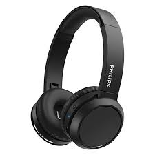

Deportes
Soy una persona muy deportista e hice muchos deportes, como hockey, patin, tenis, entre otros. Actualmente hago voley y tenis.
Música
Algo que me gusta mucho es escuchar musica. Mi genero favorito es el pop y mi cantante favorita es Taylor Swift.
Otros
Tambien me gusta mucho tocar instrumentos como el ukelele y la guitarra.